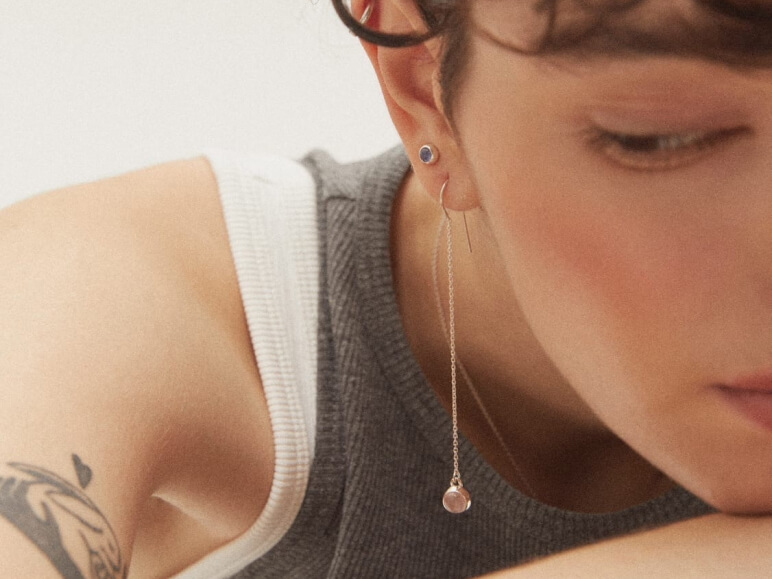
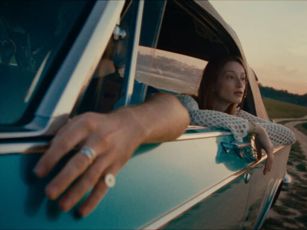
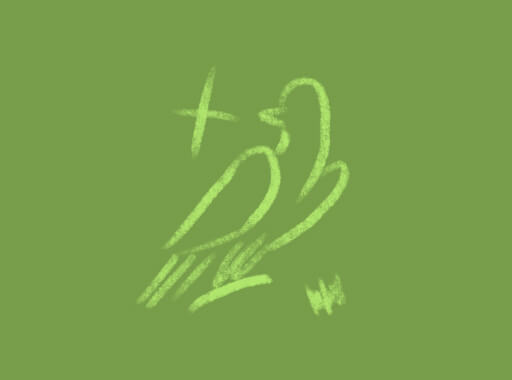
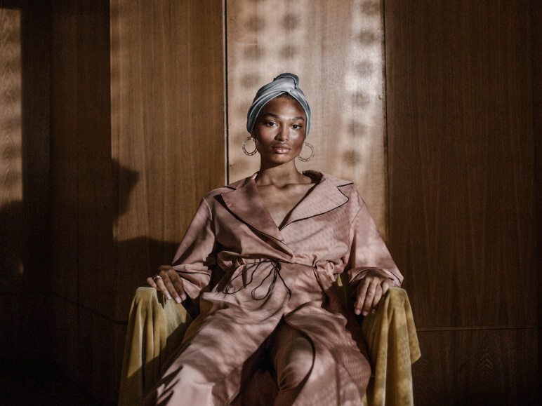
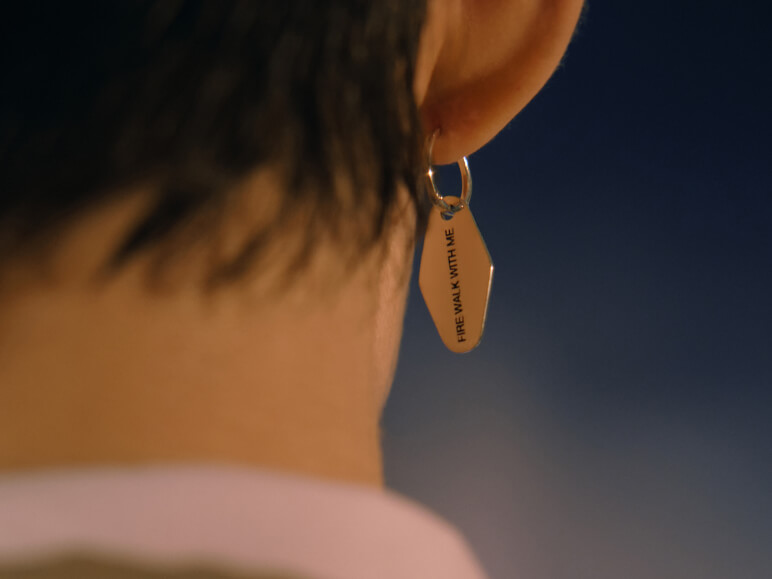

коллекции

CLASSIC
Наша история началась с большой любви к натуральным камням, а украшения с ними всегда были неотъемлемой частью бренда.

ON THE WAY TO WOODSTOCK
Наша новая коллекция, посвященная культовому музыкальному фестивалю «Вудсток» 1969 года.
СЕВЕР — это коллекция, вдохновленная финно-угорской культурой, красотой северной природы и теплыми семейными традициями.

LAB (Limited Edition)
Экспериментальная линия украшений в единичном или малотиражном исполнении. Все украшения сделаны вручную.

TATAU
Коллекция TATAU создана на основе традиционных символов, встречающихся в племенной полинезийской татуировке.

TWIN PEAKS
Мини-коллекция украшений, вдохновлённая эстетикой и символикой культового сериала «Твин Пикс» Дэвида Линча.